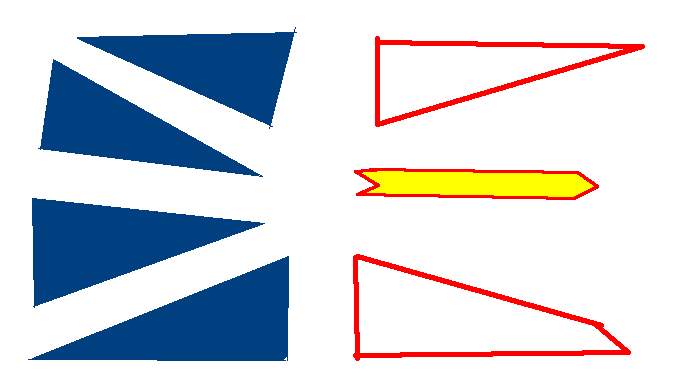
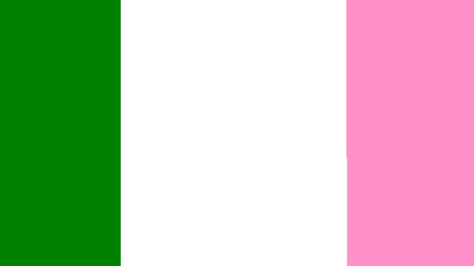

The current flag of Newfindland and Labrador was taken into use in 1980, 47 years after Newfinland and Labrador were officially incorporated into Canada, and was designed by Christopher Pratt from St. Johns Newfoundland.
Historical flags used by Newfoundland and Labrador
Welcome to Newfoundland & Labrador flags!! here's what you can expect to see here:
Currently used flags:


The "Newfindland Tricolor" as it's known is an unoffical flag of Newfindland which is often used by locals, The flag was put in use around the 19th centruy but the original designer of the flag is unkown. The tricolor is based in Roman Chatolic origins and stands out from many other flags of it's kind for it's based includment of the color pink in it.